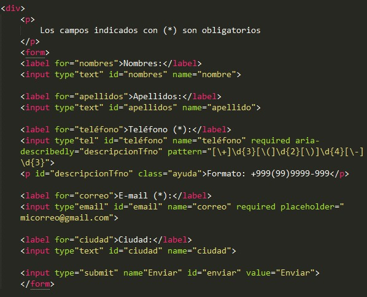
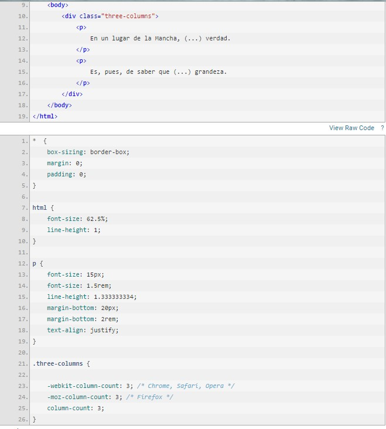
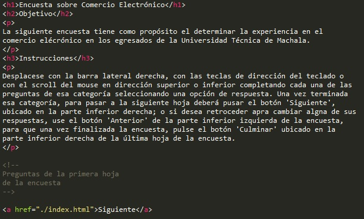

Pauta 1.3 Adaptable
Crear contenido que pueda presentarse de diferentes formas (ejm: con una disposición más simple) sin perder información o estructura.
La información y los componentes de la interfáz de usuario deben ser presentados a los usuarios de modo que ellos puedean percibirlos
Crear contenido que pueda presentarse de diferentes formas (ejm: con una disposición más simple) sin perder información o estructura.
La información, estructura y relaciones comunicadas a través de la presentación pueden ser determinadas por software o están disponibles como texto.
Un formulario HTML contiene varios campos obligatorios. Las etiquetas de los campos obligatorios se muestran en rojo. Además, el texto de cada etiqueta está marcado con el elemento fuerte para mayor énfasis. Las instrucciones para completar el formulario indican que "todos los campos obligatorios se muestran en rojo y se enfatizan", seguido de un ejemplo.
Cuando la secuencia en que se presenta el contenido afecta a su significado, se puede determinar por software la secuencia correcta de lectura.
Un texto en un página web, esta publicado por columnas, de manera que su contenido empieza a leerse desde la primera línea de la columna izquierda, continuando hasta el final de la misma donde su continuación está en la primera línea de la siguiente columna, guiando de manera natural al usuario hasta la culminación satisfactoria de la lectura del contenido web.
Las instrucciones proporcionadas para entender y operar el contenido no dependen exclusivamente en las características sensoriales de los compoentes como su forma, tamaño, ubicación visual, orientación o sonido.
Una encuesta en línea de varias páginas: Una encuesta en línea de varias páginas utiliza el ícono de una flecha verde ubicado en la parte inferior derecha del contenido como enlace para pasar de una página de la encuesta a otra. La flecha está etiquetada claramente como "Siguiente" y las instrucciones indican que "Para pasar a la próxima sección de la encuesta, presione el botón verde que dice 'Siguiente' en la esquina inferior derecha, debajo de la última pregunta de la encuesta". Este ejemplo usa a la vez el posicionamiento, el color y la etiqueta de texto para identificar el enlace que mediante CSS se le da la apariencia de un botón color verde.
